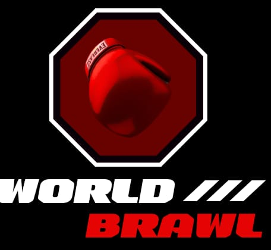
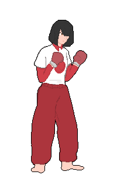

Página Acadêmica

Durante todo o ano de 2024, participei do desenvolvimento do jogo World Brawl, um jogo de luta 2D com gráficos pixelados baseado em Street Fighter.

World Brawl se passa em um futuro próximo onde os países resolvem suas diferenças de um jeito diferente. Para quem saíria vitorioso da terceira guerra mundial, as nações decidem optam em não lutar em guerras, mas decidirem tudo dentro dos ringues.